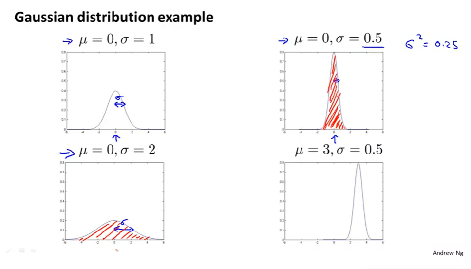

Normal Distribution / Gaussian Distribution...
The world of machine learning and data science revolves around the concepts of probability distributions and the core of the probability distribution concept is focused on Normal distributions.
Normal distribution is also known as Gaussian distribution.


Move Onto Normal Probability Distribution - If we plot the probability distribution and it forms a bell-shaped curve and the mean, mode, and median of the sample are equal then the variable has normal distribution.
This is an example of a normal distribution bell-shaped curve:

The following variables are close to normally distributed variables:
1. Height of a population
2. Blood pressure of adult human
3. Position of a particle that experiences diffusion
4. Measurement errors
5. Residuals in regression
6. Shoe size of a population
7. Amount of time it takes for employees to reach home
8. A large number of educational measures
A normal distribution is a distribution that is solely dependent on two parameters of the data set: mean and the standard deviation of the sample.
1. Mean — This is the average value of all the points in the sample that is computed by summing the values and then dividing by the total number of the values in a sample.
2. Standard Deviation — This indicates how much the data set deviates from the mean of the sample.
The normal distribution is simple to explain. The reasons are:
1. The mean, mode, and median of the distribution are equal.
2. We only need to use the mean and standard deviation to explain the entire distribution.

Learn More
Learn More